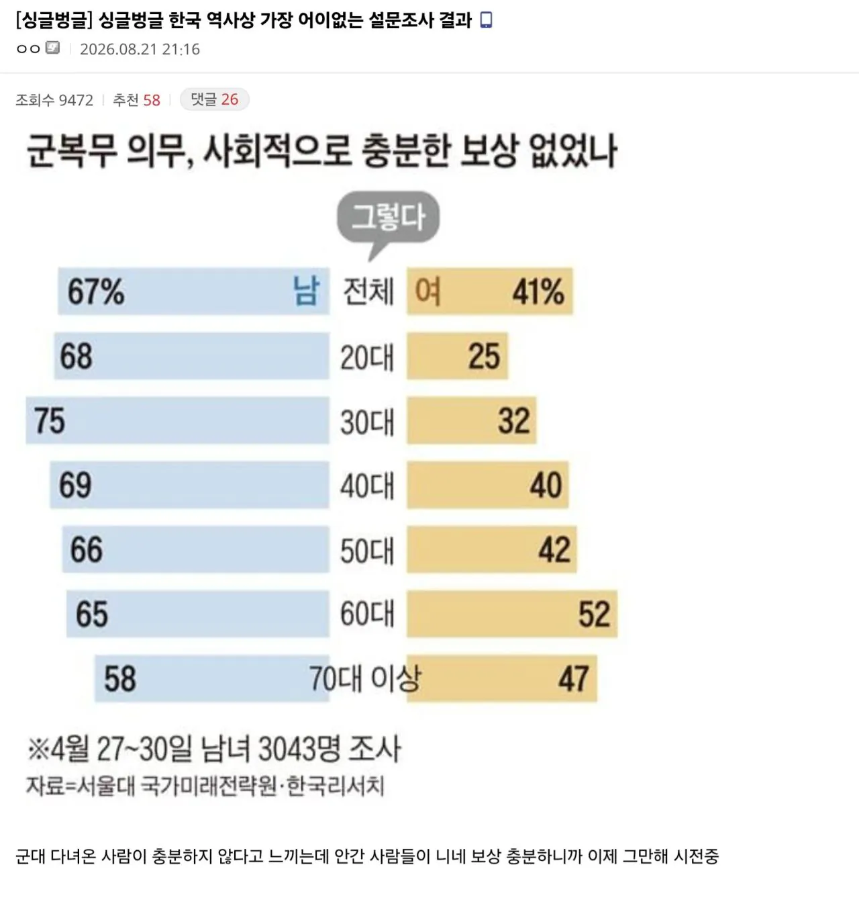

찾아보니 5월에 실시한 조사같은데 이런건 군필자한테 물어보는게 맞지 않나 싶네

찾아보니 5월에 실시한 조사같은데 이런건 군필자한테 물어보는게 맞지 않나 싶네
월급도 올려주고 복무여건도 개선하고 했으니깐
이제 페미는 일부가 아님
한녀 그 자체임
그걸 개인의 표 돈때문에 선동했다는게 문제.
이완용이랑 같은짓을 한거.
저걸 여자한테 왜 물어봄? ㅋㅋㅋㅋㅋㅋㅋㅋㅋㅋ
아니시발 어이 없네
여자들이 어떤 인식을 갖고 있는지 아는 차원에서도 의미는 있지
잘못된걸 알아야 고칠 기회도 있는거니까
니 논리대로라면 전장연은???
씨발 하지도 않은 년들한테 왜 물어봄?
교련 세대가 그렇다 비율 더 높은게 충격적이네 ...
그 사람들은 가산점 받고 다했으니깐ㅋㅋㅋ
가산점은 공무원에 해당하는거고 사고방식의 차이임 만원받으면서 3년 복무한사람들이 공무원 가산점가지고 보상이라고 생각하겠음 저시대는 할거 없으면 공무원이라도 해라시절이었음
그냥 군대가는게 당연하다고 생각해서 불만이 적은거야 반대로 그럴수있는게 여자도 나이가 먹을수록 오히려 더 공감비율이 높지
젊을수록 남자는 더 불합리를 느끼고 여자는 더 감사하지않는다
보상이 어딨어 씨발
신체전성기 중에 3년/2년/1년반 깔끔하게 잃고도 모자라서
말 안하면 모를 생활에 지장은 없는 후유증 혹은 흉터인지
또는 장애 수준인지
정도의 차이는 있어도 몸 100% 성하게 집에 가는 애가 없는데
페미니즘의 가장 큰 적: 아들 가진 엄마
아니씨발 ㅋㅋㅋ 계집년한테 대체 왜 처묻냐고
입장바꿔서 출산의 고통 별거 아니다 vs 개좆된다 이걸 누가 남자한테 처묻노.....?
실제로 쳐물어보고 이대남의 75%가 "출산 그거 조금 큰 똥 싸는 수준이다"로 답변한 상황 ㅋㅋㅋ
장애인 배려, 사회적으로 충분한가
이 설문이 있으면 장애인만 답해야함?
계집년들 취사병 같은거라도 시키면 되잖아
출산율 1도 못찍는 나라 계집들이 늘 하는말 여자는 출산 하잖아 지랄함 그럼 25살까지 출산 안한것들 의무 복무 시켜야지
남자들이 많은걸 바란것도 아니고 꼴랑 군가산점
군대경력 인정 같은건데 그것도 목에 핏대세우고 지랄하니 계집들도 군복무 시켜야됨
20대 여자 75%는 군인한테 충분한 보상을 하고 있다고 생각한다는거네 ㄷㄷ
20대 여성 90퍼 자신을 페미니스트라 생각
예초 취사 위병소 이런 비전투 업무들은 외주 줄 생각말고 여성 징병해서 채우면 되는거 아님? 여군무원들도 위병 당직 다 하는데 못할거 뭐있음?
군복무를 해본적이 없는 사람들이 충분과 불충분의 판단을 뭘로 하는거임...
저걸왜 군대안다녀온사람한테 물어봄
찾아봤는데 올해 설문지네 ㅋㅋㅋㅋㅋㅋ
50-60에서 올라가는이유는 자식들이 군대가거든
이야 조선족 갈라치기 알바단 대단하네 20대여성 75%가 갈라치기 조선족이었다니
충분한 보상을 주는데 왜안가는거임?ㅋㅋ
여자한테 왜 묻는거냐?
이거 잘 모르겠다고 체크 한 비율이 궁금하네
의무는.없지만 걸스플레인은함 ㅋㅋㅋ
남자 전체 70퍼도 안되는게 신기하네
2년 존나 아깝던데